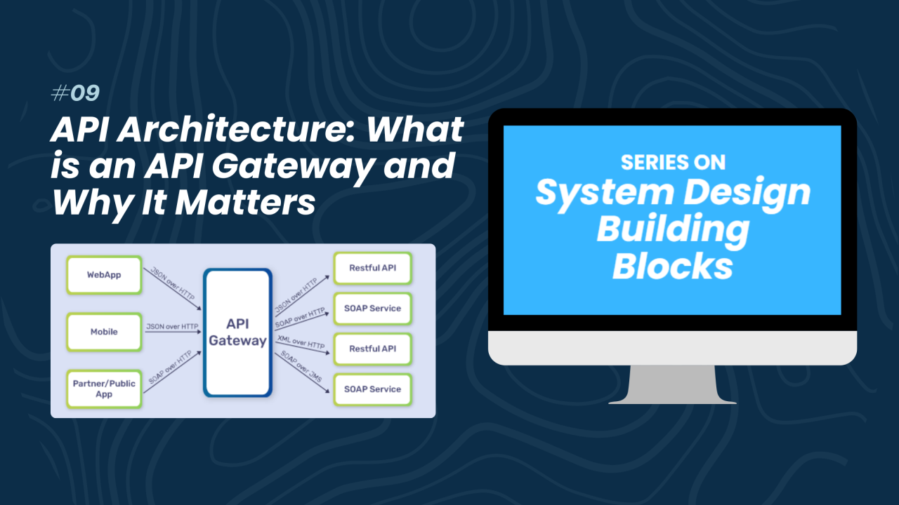

API Architecture: What is an API Gateway and Why It Matters
Ashmita Pandey · · Backend · APIs

Hi everyone, I'm Ashmita 👋
In the modern software landscape, APIs form the backbone of communication between different services. As applications scale and adopt microservice-based architectures, the number of APIs grows significantly. Managing this complexity requires a powerful pattern i.e. the API Gateway.
An API Gateway serves as the single entry point for client requests, simplifying how users and services interact with backend systems. It improves performance, enhances security, and centralizes critical responsibilities.
Let's dive deep into how API Gateways work, their importance, core features, and a real-world example to understand them in action.
What is an API Gateway?
An API Gateway is a server that acts as an intermediary between clients (such as web or mobile applications) and backend microservices. It receives incoming API requests, validates them, applies necessary logic (such as authentication or transformation), routes them to the correct service, and returns the response to the client.
Without an API Gateway, every client would need to communicate individually with multiple backend services, which would:
- Increase complexity for the client
- Expose internal architecture
- Make consistency and security harder to manage
With an API Gateway in place:
- Clients send requests to a single endpoint
- The Gateway handles security, traffic control, request routing, and more
Why Use an API Gateway? (Real-World Scenario)
Imagine a food delivery app like Swiggy or Zomato. When a user places an order, the system needs to:
- Authenticate the user
- Verify inventory with the restaurant
- Process payment
- Assign a delivery driver
Each of these steps might involve a separate backend service. Instead of the client interacting directly with all of them, the API Gateway receives the request and coordinates these services behind the scenes.
Core Features of an API Gateway
1. Authentication and Authorization
The Gateway verifies the identity of users (Authentication) and checks what they are allowed to do (Authorization).
- Supports tokens like JWT or OAuth
- Prevents unauthorized access
- Ensures all services follow the same access policies
2. Rate Limiting
Prevents abuse by limiting how many requests a client can make in a defined time.
- Helps avoid server overload
- Protects against DDoS attacks
Example: Allowing only 100 requests per minute per user.
3. Load Balancing
Distributes incoming traffic across multiple instances of a service.
- Ensures even workload
- Avoids bottlenecks or downtime
Example: If three instances of the payment service are running, the Gateway sends requests in a round-robin or least-connections pattern.
4. Request and Response Transformation
Modifies incoming or outgoing data to ensure compatibility between clients and backend services.
- Converts formats (e.g., XML to JSON)
- Renames fields or restructures payloads
5. Caching
Stores frequently accessed data temporarily.
- Reduces repeated calls to backend
- Improves response time
Example: Caching a restaurant menu or delivery fee calculation.
6. Service Discovery
Automatically identifies backend services dynamically without hardcoding their locations.
- Supports microservices that scale dynamically
- Ensures resilience even during server updates or failures
7. Circuit Breaking
Temporarily blocks requests to a failing service to prevent cascading failures.
- Protects system stability
- Automatically resumes once the service recovers
8. Logging and Monitoring
Captures detailed data for each API request.
- Tracks request paths, response times, and errors
- Helps debug issues and monitor system health
How Does an API Gateway Work? (Step-by-Step with Example)
Let’s walk through the steps using a real-world scenario: placing a food delivery order.
Step 1: Client Sends a Request
The user taps "Place Order" in the app. The app sends a POST request with user ID, items, address, and payment method to the API Gateway.
{
"userId": "u123",
"items": ["burger", "fries"],
"address": "123 Main Street",
"paymentToken": "abcd1234"
} Step 2: Request Validation
The Gateway checks if required fields exist, format is correct, and content type is valid.
if (!req.headers['content-type'].includes('application/json')) {
return res.status(400).send('Invalid Content-Type');
} Step 3: Authentication and Authorization
The Gateway verifies the token using an identity provider and confirms if the user has permission to place an order.
const token = req.headers.authorization.split(' ')[1];
const user = await verifyToken(token);
if (!user.permissions.includes('place_order')) {
return res.status(403).send('Forbidden');
} Step 4: Rate Limiting
Checks if the user has exceeded the request threshold.
const current = await redis.incr(`rate_limit:order:${user.id}`);
if (current > 10) {
return res.status(429).send('Too Many Requests');
} Step 5: Request Transformation
Converts delivery address to GPS coordinates for backend services.
const coordinates = await geocode(address);
req.body.location = coordinates; Step 6: Routing to Backend Services
The Gateway routes requests to multiple services:
- Order Service for creating order record
- Inventory Service to verify item availability
- Payment Service to process the transaction
- Delivery Service to assign a driver
const orderResponse = await axios.post('http://orders/api/create', req.body); Step 7: Response Transformation and Caching
Transforms backend responses into a single unified format for the client and optionally caches data.
const response = {
orderId: orderResponse.data.id,
deliveryETA: deliveryService.data.eta
};
cache.set(orderId, response); Step 8: Logging and Monitoring
Records all relevant data to help monitor performance and troubleshoot problems.
logger.log({
path: req.path,
method: req.method,
status: res.statusCode,
userId: user.id
}); Conclusion
An API Gateway is much more than a simple router. It is a powerful tool that enhances the performance, security, and scalability of distributed systems.
By centralizing tasks like authentication, request routing, transformation, and monitoring, it simplifies development and ensures consistency across services.
Whether you are building a simple web app or a large-scale microservices platform, incorporating an API Gateway into your architecture is a decision that can improve both developer productivity and user experience.
If you're looking to implement one or explore this further, feel free to reach out or drop your questions!
Thanks for reading!